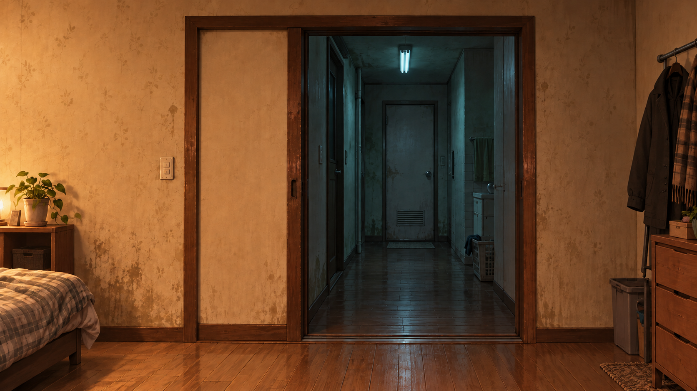
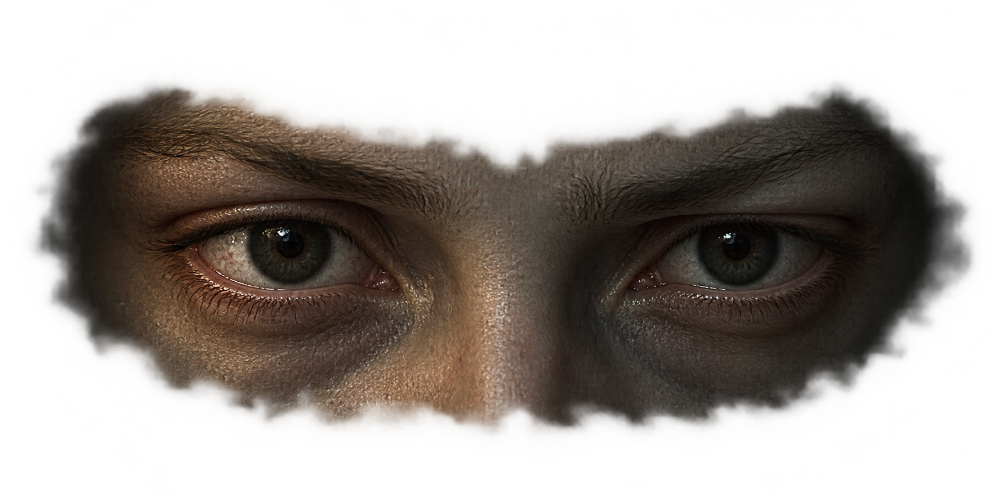
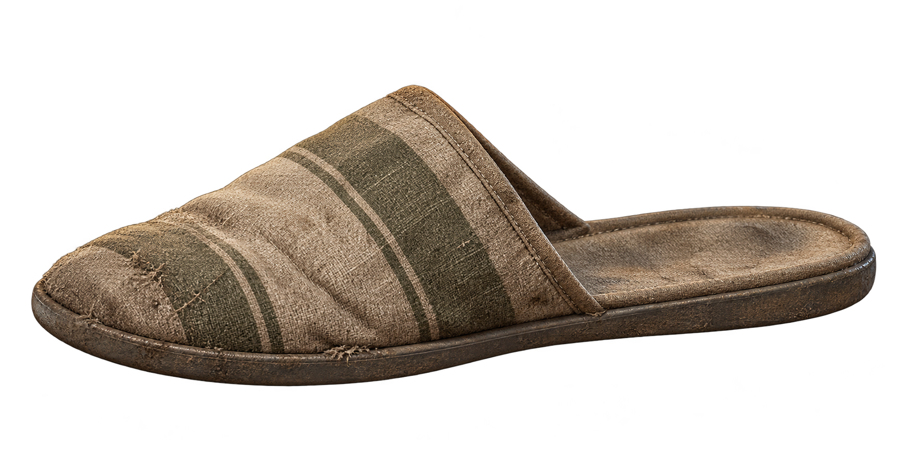
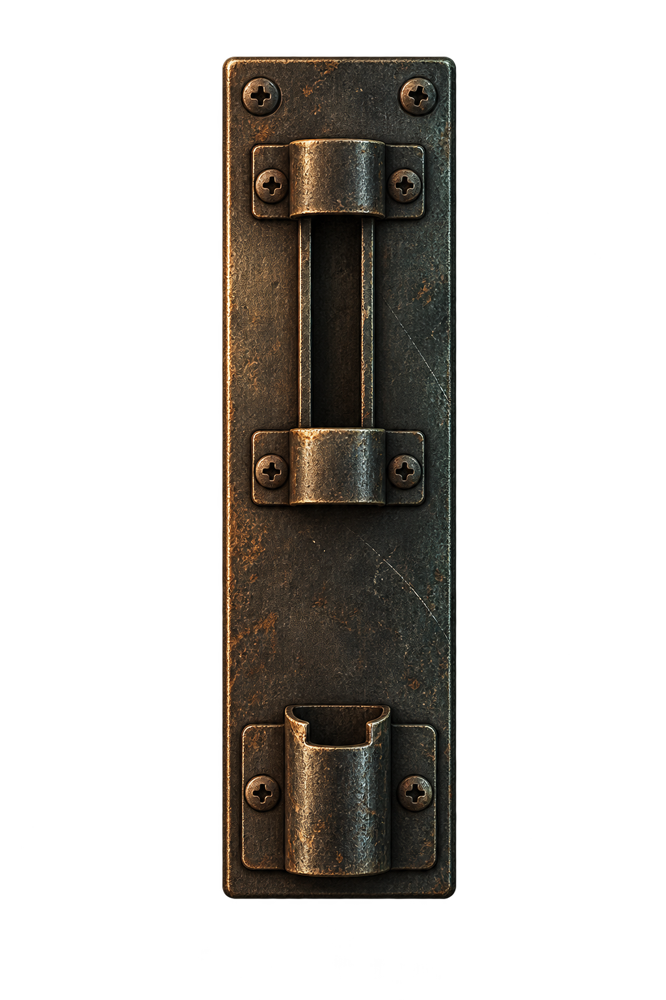
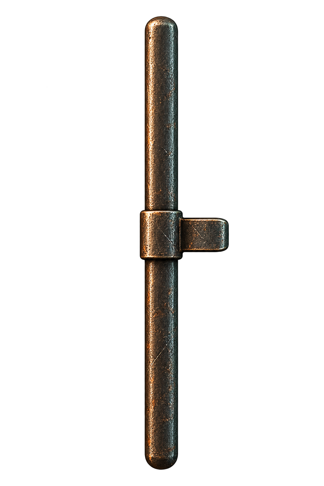
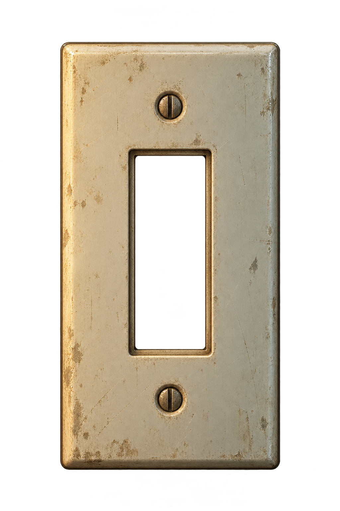
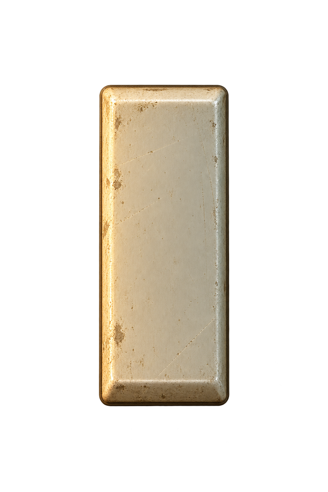
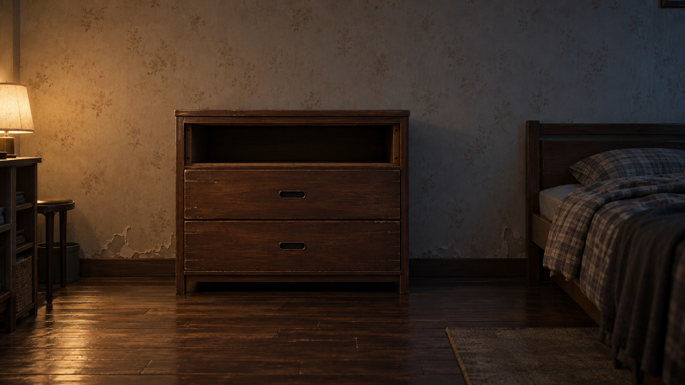
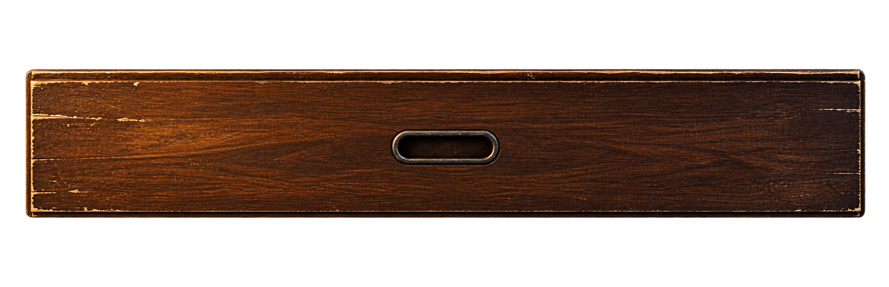

마스킹 구간의 승강기 모터. 루프 전체에 소음 차폐를 판정하지 말고 실제 재생 gain과 연결.
문틈 — 일곱 기믹 에셋 팩
신규 이미지 9종 · 기존 참조 이미지 4종 · 효과음 18종. Claude에 넘길 제작물 미리보기입니다. 이 페이지의 체크박스는 부품 합성 확인용이며 게임 구현이 아닙니다.
포함한 일곱 기믹
| ID | 기믹 | 예정 대응 |
|---|---|---|
| G1 | 다른 소리에 숨어 움직이기 | 외부 소리가 문 소음을 충분히 가리는 동안 진행하고, 작아지면 멈춘다. |
| G2 | 문을 닫은 뒤 걸쇠까지 잠그기 | 문을 닫은 후 손잡이를 놓고 걸쇠를 조심히 내린다. 걸쇠가 홈에 들어가야 완료. |
| G3 | 문틈의 눈을 피하며 닫기 | 눈을 마주치지 않도록 아래로 보되, 손잡이는 식별하며 문을 닫는다. |
| G4 | 불을 켜서 확인할지 선택하기 | 불로 정보를 얻는 대신 소리와 빛으로 위치가 드러나는 위험을 감수한다. |
| G5 | 임시 버팀목을 쓰고 다시 빼기 | 슬리퍼로 잠깐 문을 지탱하고 다른 행동을 한다. 완전히 닫기 전에 빼고 다시 잡는다. |
| G6 | 내 움직임을 따라 하는 상대를 속이기 | 짧게 움직이고 멈춰 상대의 응답을 유도한 뒤 반대 방향으로 움직인다. 지연은 런타임 소유. |
| G7 | 등 뒤를 확인하는 동안 문을 보지 못하기 | 뒤쪽 서랍을 보면 움직임이 멎지만 그동안 문틈을 볼 수 없다. |
이미지 원본

front-lit.png · 1672 × 941
배경 PNG · G4

eyes.png · 1774 × 887
투명 PNG · G3

slipper-wedge.png · 1774 × 887
투명 PNG · G5

latch-body.png · 1024 × 1536
투명 PNG · G2

latch-bolt.png · 1024 × 1536
투명 PNG · G2

switch-body.png · 1024 × 1536
투명 PNG · G4

switch-rocker.png · 1024 × 1536
투명 PNG · G4

rear-room.png · 1672 × 941
배경 PNG · G7

rear-drawer-front.png · 2206 × 713
투명 PNG · G7
분리 부품 합성 확인
게임 배치 전의 출발 좌표입니다. 걸쇠 봉은 고정 가이드 뒤로, 서랍 앞판은 빈 공간 위로 합성합니다.
걸쇠 고정판 + 이동 봉
스위치 고정판 + 로커
뒤쪽 방 + 서랍 앞판
조명 상태 비교

효과음
48kHz / PCM16 / 스테레오. 현장 녹음이나 성우 녹음이 아닌 원본 합성 Foley입니다. 재생 버튼으로 개별 확인할 수 있습니다. 감각적 품질과 게임 내 믹스는 아직 사용자·Claude 검토 전입니다.
창밖 차량 통과 8초. 중심 구간이 가장 크다. 앞뒤 작은 소리 구간은 안전 마스킹으로 취급하지 않을 것.
걸쇠를 천천히 내리는 마찰. 실제 이동 속도와 gain을 연결.
걸쇠가 홈에 들어간 완료 피드백. 한 번만 재생.
걸쇠를 급하게/잘못 움직일 때의 금속 떨림. 실패 확정과는 분리.
눈/시선 위협의 가까운 합성 숨. 대사/배우 녹음이 아니며 시각 신호를 대체하지 않음.
벽 스위치 눌림. 켬/끔 공용, 같은 토글에서 중복 재생하지 않을 것.
불이 켜진 동안의 작은 전원 험. 80ms 이상 gain fade 권장.
슬리퍼를 문 밑으로 밀어 넣는 마찰과 접촉.
버팀목이 미끄러지는 경고. 끝의 음량이 커짐. 예고 없이 즉사 판정에 쓰지 않을 것.
슬리퍼를 빼는 마찰. 제거 완료 이벤트와 분리해 동작 중 재생.
플레이어 쪽 문 마찰. 실제 문 이동 중만 재생하고 멈추면 감쇠.
문 너머의 유사한 응답 마찰. 런타임에서 플레이어 소리에 지연시켜 재생; 지연/정답 타이밍은 파일에 구워 넣지 않음.
서랍 이동 마찰. 바라보아 멈추면 짧게 감쇠시키기.
서랍이 조금씩 열리는 지속 예고. 시선/진행 상태와 연결.
서랍이 걸리거나 닫힐 때의 둔탁한 접촉.
등 뒤 바닥의 체중 이동처럼 들리는 합성 삐걱임. 위치 예고용.
H2의 목재 공명 설계에 기반한 공용 단일 노크. 노크 리듬은 런타임에서 구성.